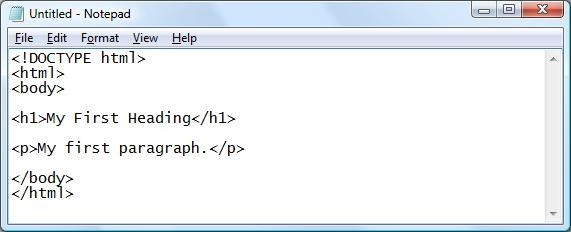
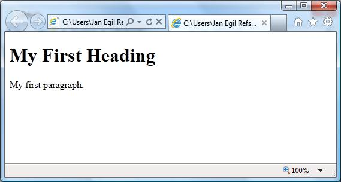

HTML 편집툴
목록
1. html 편집툴
HTML은 다음의 HTML 편집기를 사용하여 편집 할 수 있습니다
어도비 드림위버
Microsoft Expression Web에서
CoffeeCup의 HTML 편집기
그러나, HTML을 배우기 위해 꼭 전문툴을 사용할 필요는 없습니다. PC에 설치된 간단한 텍스트 편집기를 사용하여 HTML을 배울 수있습니다.
2. 윈도우즈의 메모장을 이용하여 html 작성
① 메모장(notepad) 실행
② 메모장에 html코드를 입력

③ html을 저장(.htm 또는 .html 확장자를 사용하면 된다)
④ 웹 브라우즈에서 html파일 열기
